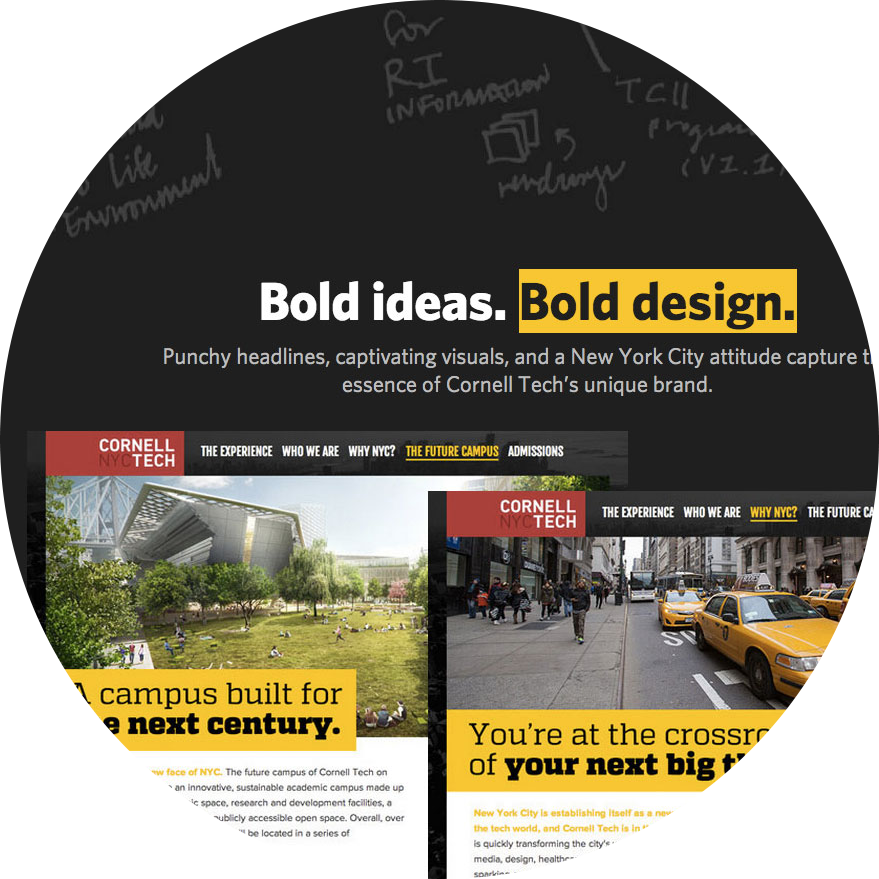
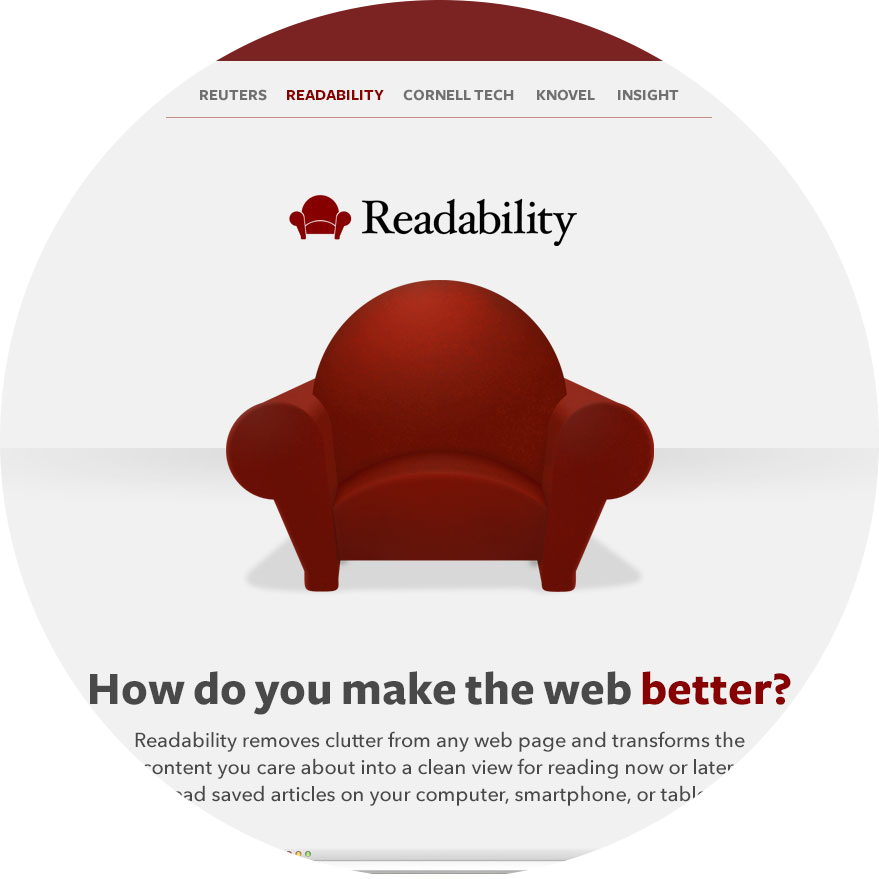
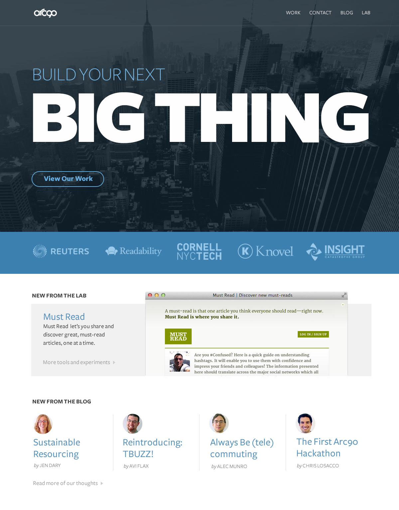
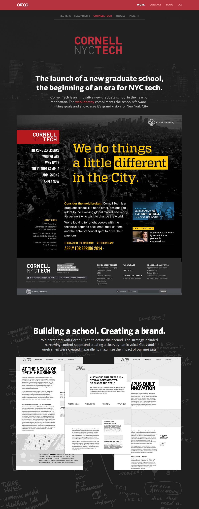
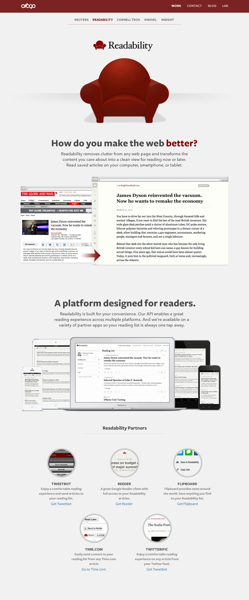

A New York success story.
Arc90 was founded in Brooklyn, NY in a small top-floor apartment. Half a decade later, it became a major voice in the technology industry. My challenge was to create a digital presence that could showcase Arc90’s wide portfolio and abilities. The result was an identity that showcased the firm’s biggest asset: its people.
- Project Lead
- Front-end Lead
Passion in everything.
The people of Arc90 committed themselves to quality and had a respect for doing things well. I wanted their online identity to have the same consideration. The project narratives revealed an unprecedented level of craftmanship and were a reflection of the builders who created them.
-

Engaging Layouts
Every project had multiple levels of complexity. Organizing images and copy to create an inviting layout was critical to the narrative for each project.
-

Vibrant Colors
Implementing themes helped give each story a unique character. Color helped draw the eye through the page as a user scrolled.
-
Beautiful Typography
The big, punchy headlines that complimented each layout featured fonts from Hoefler & Co., including the gorgeous Gotham.
People Power

Arc90 was defined by its people. To drive this point home, each project page ended by revealing the men and women behind the project, literally. It was a clever way to showcase their talent and give each page a bit of charm.
The end of a story arc.
The final Arc90 designs displayed what it meant to be a premier product shop. From humble beginnings to big-name clients, Arc90 is sure to surpise in its next chapter of life under SFX.
- 
- 
-
Have a question?
-
Done browsing?